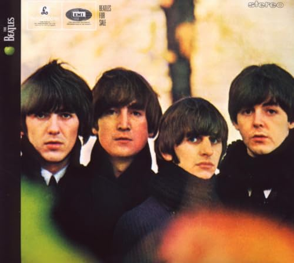
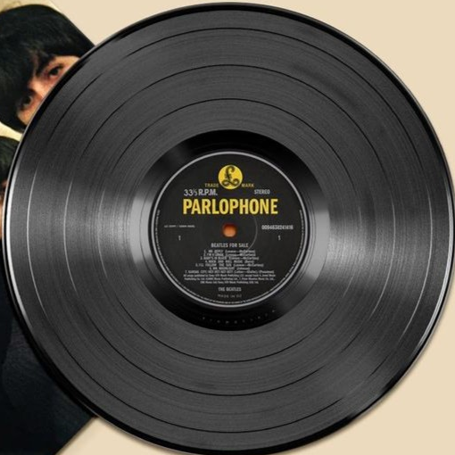
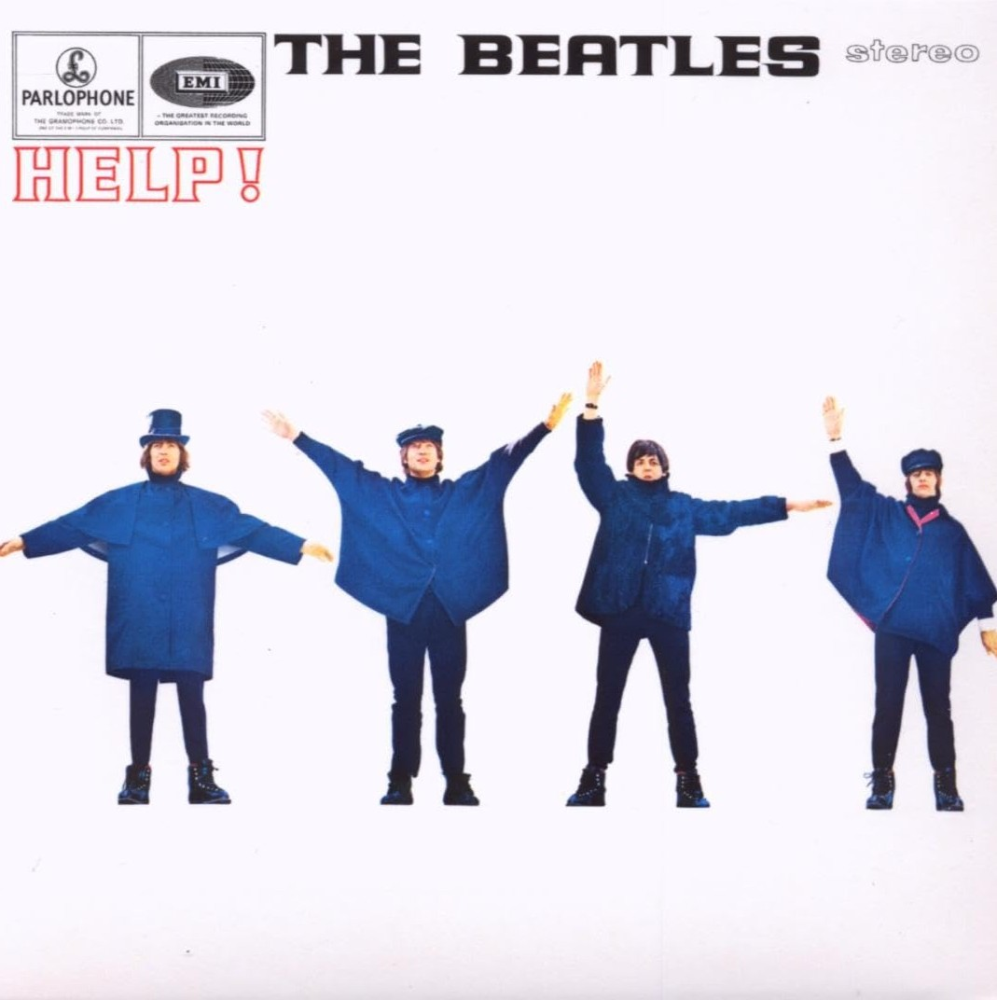
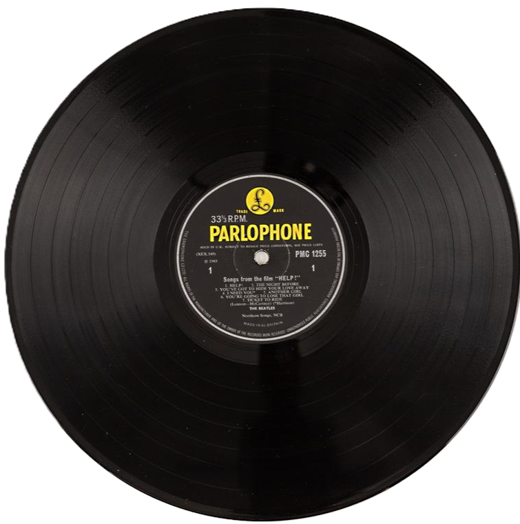
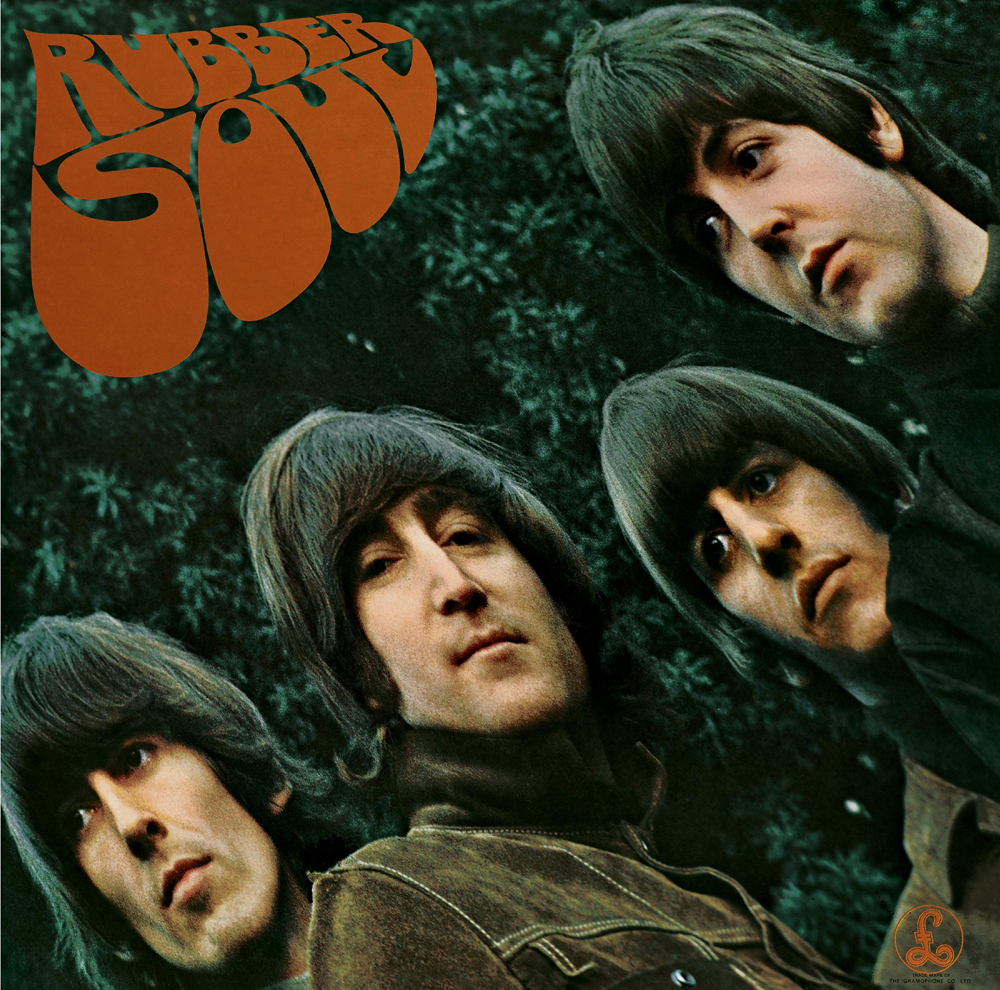
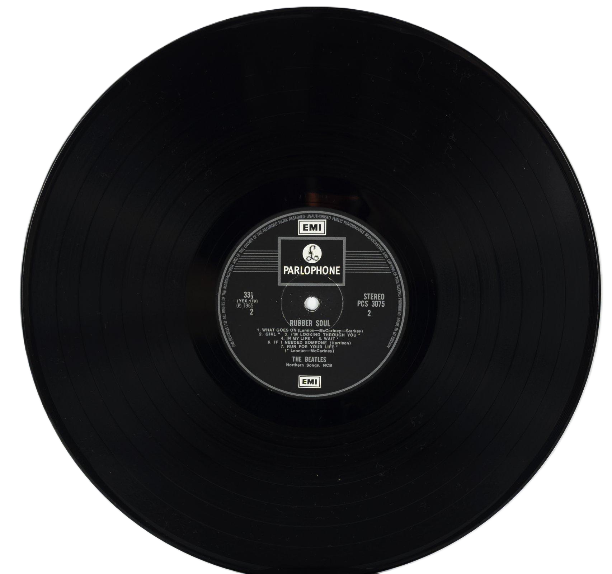

Beatles for Sale (1964)
Quarto albúm de estúdio, lançado em 4 de dezembro de 1964, o disco representa um ponto de virada na carreira do grupo, trocando a euforia e o otimismo juvenil dos primeiros trabalhos por um som mais introspectivo, melancólico e influenciado pelo folk-rock e pela música country. Gravado em meio a uma agenda exaustiva de turnês mundiais, filmagens e compromissos promocionais ao longo de 1964, o álbum reflete o cansaço físico e mental da banda.
Curiosidade
A frase "Eight Days a Week" não foi inventada por John ou Paul. Durante o período em que Paul McCartney teve sua carteira de motorista suspensa, ele contratou um chofer para levá-lo até a casa de John para compor. No caminho, Paul perguntou como o motorista estava, e o homem respondeu cansado: "Ah, trabalhando duro... oito dias por semana". Paul achou a expressão brilhante e a transformou em música no mesmo dia.
Destaques:
- Eight Days a Week
- No Replay


HELP! (1965)
Lançado em agosto de 1965, com 14 faixas influenciadas pelo folk rock de Bob Dylan e pelo uso crescente de instrumentos acústicos e arranjos de estúdio. O albúm serviu de trilha sonora para o segundo filme de mesmo nome, Dirigido por Richard Lester, o longa-metragem Help! levou a banda para locações nas Bahamas, nos Alpes Austríacos e na Inglaterra, acompanhando uma trama cômica envolvendo um culto oriental e um anel sagrado preso no dedo de Ringo Starr.
Curiosidade
Paul McCartney acordou com a melodia de "Yesterday" pronta na cabeça e, temendo tê-la plagiado inconscientemente de algum padrão de jazz, passou semanas tocando-a para amigos e produtores perguntando se a conheciam. Enquanto não escrevia a letra definitiva, usava versos provisórios que começavam com "Scrambled eggs, oh my baby how I love your legs..." ("Ovos mexidos, oh meu bem como eu amo suas pernas").
Destaques:
- Help!
- Yesterday


Rubber Soul (1965)
Sexto álbum de estúdio dos Beatles, lançado em dezembro de 1965. Considerado um marco na história da música popular, o disco transformou o conceito de álbum de pop/rock — deixando de ser uma coletânea de singles com faixas de preenchimento para se tornar uma obra artística coesa, madura e focada no trabalho de estúdio.
Curiosidade
A faixa "Run for Your Life" traz uma letra possessiva e ameaçadora ("Prefiro ver você morta, garotinha, do que com outro homem"), baseada em um verso de uma antiga música country gravada por Elvis Presley ("Baby Let's Play House"). Décadas depois, John Lennon declarou que "Run for Your Life" era a música dos Beatles que ele mais odiava e se arrependia de ter escrito..
Destaques:
- In My Life
- Michelle